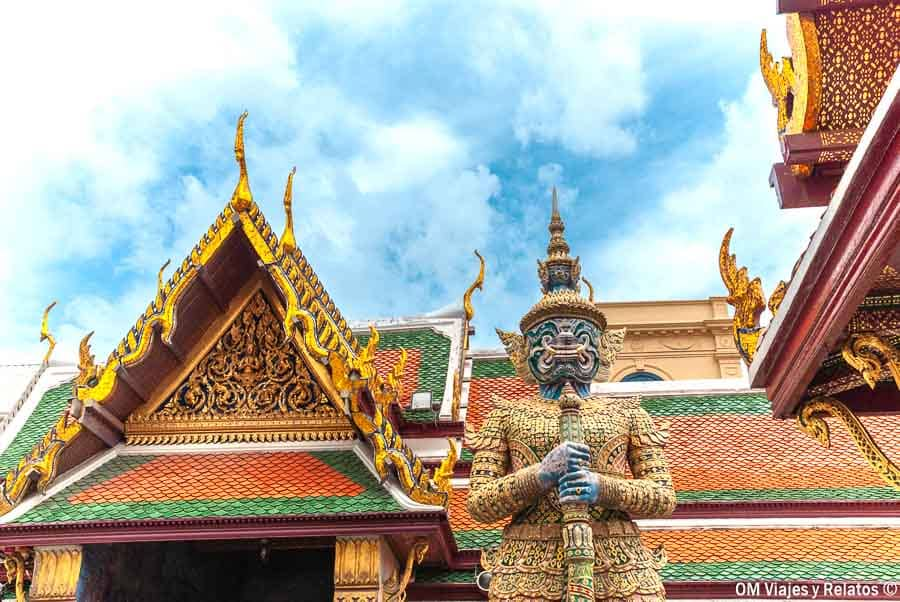

ประเทศไทย (Thailand)

ประเทศไทย หรือชื่อทางการว่า ราชอาณาจักรไทย เดิมเรียกว่า สยาม (จนถึงวันที่ 24 มิถุนายน พ.ศ. 2482) เป็นประเทศในเอเชียตะวันออกเฉียงใต้แผ่นดินใหญ่ มีพรมแดนทางบกติดกับประเทศพม่าทางทิศตะวันตกและตะวันตกเฉียงเหนือ ประเทศลาวทางทิศตะวันออกและตะวันออกเฉียงเหนือ ประเทศกัมพูชาทางทิศตะวันออกเฉียงใต้ และประเทศมาเลเซียทางทิศใต้ ส่วนทางทะเลเชื่อมกับอ่าวไทย และ ทะเลอันดามัน รวมถึงมีพรมแดนทางทะเลร่วมกับ ประเทศเวียดนาม ประเทศอินโดนีเซีย และประเทศอินเดีย ประเทศไทยมีประชากรเกือบ 66 ล้านคน[9] พื้นที่ประมาณ 513,115 ตารางกิโลเมตร (198,115 ตารางไมล์)[10] และมี กรุงเทพมหานคร เป็นเมืองหลวงและเมืองที่ใหญ่ที่สุด[11]
หลักฐานทางโบราณคดีชี้ว่ามนุษย์อาศัยอยู่ในพื้นที่ประเทศไทยปัจจุบันมาตั้งแต่ประมาณ 40,000 ปีก่อนกลุ่มชาติพันธุ์ดั้งเดิมได้แก่ ชาวมอญ ชาวเขมร และชาวมลายู ขณะที่ชาวไทมีทฤษฎีว่าอาศัยอยู่ในแถบเดียนเบียนฟู ตั้งแต่คริสต์ศตวรรษที่ 5 และเริ่มเข้ามาในอาณาเขตประเทศไทยปัจจุบันระหว่างคริสต์ศตวรรษที่ 8–10 แนวคิดเกี่ยวกับถิ่นกำเนิดของชนชาติไท ในยุคประวัติศาสตร์กลาง มีการตั้งอาณาจักรสำคัญ ได้แก่ อาณาจักรสุโขทัย อาณาจักรล้านนา และอาณาจักรอยุธยา อาณาจักรสุโขทัยถือเป็นจุดเริ่มต้นของประวัติศาสตร์ไทย ขณะที่อาณาจักรอยุธยา ก่อตั้งเมื่อ พ.ศ. 1893 และรุ่งเรืองจนกลายเป็นประเทศอำนาจนำภูมิภาคแทนจักรวรรดิเขมร การติดต่อกับยุโรปเริ่มขึ้นใน พ.ศ. 2054 เมื่อคณะผู้แทนชาวโปรตุเกสเดินทางมายังกรุงศรีอยุธยา อาณาจักรอยุธยารุ่งเรืองสูงสุดจนถูกทำลายสิ้นเชิงในการเสียกรุงศรีอยุธยาครั้งที่สอง โดยกองทัพอาณาจักรพม่าภายใต้ราชวงศ์โก้นบองใน พ.ศ. 2310